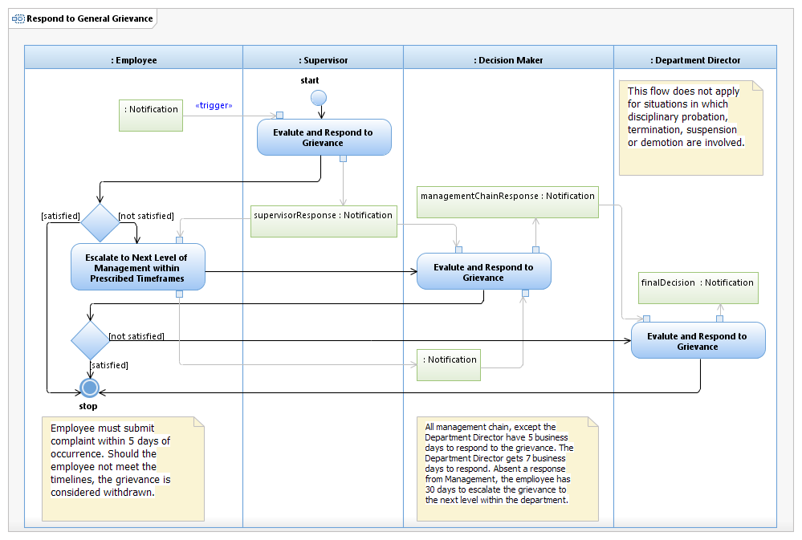

Use Case Model: Respond to General Grievance

Use Case Model: Respond to General Grievance
Architect: Aaron Brown, IT Enterprise Architect Senior
Date Last Modified: 2/20/2013
User Review: Jeff Burton, Employee Relations Manager
Date: 2/20/2013
Respond to an employee complaint or concern, and provide a final response. Each evaluator gets 5 days to produce a response, if the employee is unhappy with the response, it can be escalated to the next higher level. If the employee remains dissatisfied, the Department Director will provide the final decision (within 7 working days).
Follow link to Role Definitions
Use Case Model: Respond to General Grievance

Activity Model: Respond to General Grievance